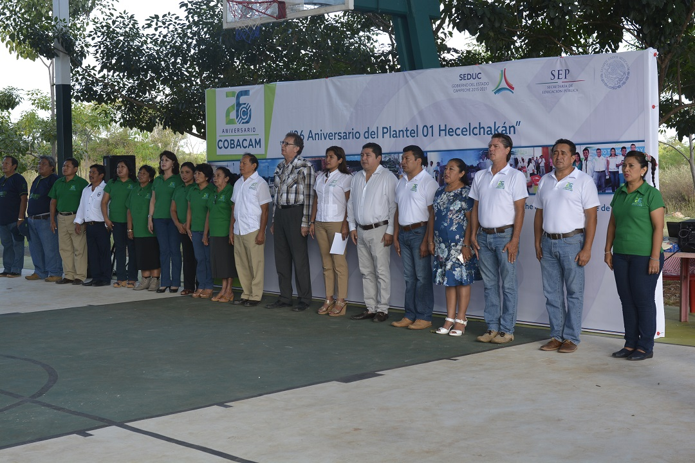
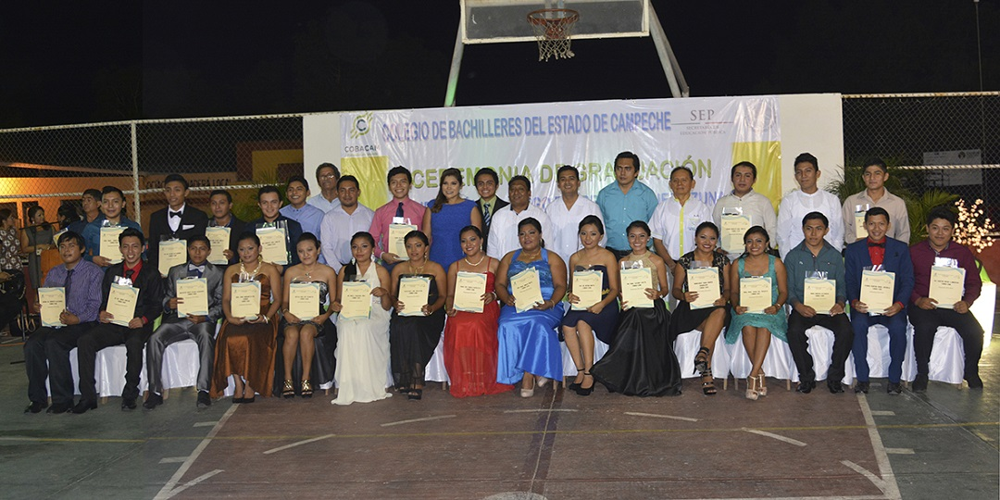

Hasta 1990 en Campeche el bachillerato era impartido por los organismos descentralizados del gobierno federal denominados: CBTiS, CBTAS; CETMAR, escuelas Preparatorias Federales por Cooperación, Bachillerato Pedagógico; mientras por parte del gobierno estatal lo hacían la Universidad Autónoma del Sudeste, el Instituto Campechano y la Universidad Autónoma del Carmen.
El gobernador, Abelardo Carrillo Zavala, consciente de las reformas que la federación emprendía en el sistema educativo nacional y en particular en el nivel medio superior, decidió dar respuesta a la sociedad campechana y tras largos meses de negociación entre las autoridades educativas estatales, sociedad civil y el gobierno federal, el 7 de septiembre de 1990, mediante el decreto 65 de la LIII Legislatura del H. Congreso del Estado, se crea el Colegio de Bachilleres del Estado de Campeche.
El 16 de octubre de 1990 se nombra como director general del Colegio de Bachilleres de Campeche, al Ing. Santos Efrén Yam Keb (1990-1998).
El primer plantel, 01 Hecelchakán, ubicado en el municipio con el mismo nombre, inició su labor académica el 26 de noviembre de 1990 con una matrícula de 98 alumnos distribuidos en tres grupos y funcionando provisionalmente en la Escuela Secundaria Federal “Cabalán Macari”, de la misma comunidad.
En 1998 las escuelas preparatorias por cooperación de Bécal, Calkiní y Dzibalchén se convierten en centros formales del Colegio de Bachilleres, así como también se inicia el proyecto de concretar la Educación Media Superior a Distancia (EMSaD), con la creación de unidades de enseñanza en las comunidades de Ukúm, en Hopelchén y Libertad, en el municipio de Escárcega; siendo éstos los primeros centros educativos que formaron el cimiento para el gran despliegue que ha desarrollado el Cobach en Campeche por el transcurso de 25 años.
Desde su creación, el Cobach inició un crecimiento que no se ha detenido, y no solo en infraestructura, sino en la atención y servicios que se brinda a nuestros más de 9 mil jóvenes bachilleres; en toda la geografía estatal, lo que lo posiciona como la institución de Educación Media Superior más grande en el Estado
En el 2012 dos de sus planteles, Bécal y Calkiní, ingresaron al Sistema Nacional de Bachillerato (SNB) en los niveles II y III, respectivamente; al día de hoy son 13 planteles y 10 centros EMSaD los pertenecientes al SNB, lo que refrenda el compromiso con la educación media superior, y se continúa trabajando en ello para garantizar la inclusión de todos sus centros educativos.
Actualmente cuenta con 37 unidades educativas, de las cuales 20 son planteles y 17 son centros de Educación Media Superior a Distancia (EMSaD) y su presencia en las comunidades donde se ubica, impacta favorablemente en su desarrollo.